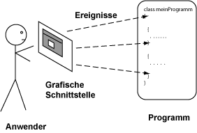

Antwort:
Ich habe nur die Schaltflächen-Objekte genommen, die ich wollte.
Jemand anderes hat die Programmierung erledigt.
Die Befehlsschaltflächen sind Komponenten, die mit einem Minimum an Aufwand hinzugefügt werden können.
Das ist vergleichbar mit dem Einkaufen in einem Möbelgeschäft,
um Komponenten zur Verbesserung Ihrer Wohnung einzukaufen.
Die meisten Teile, die Sie brauchen, gibt es schon.
Sie müssen sie nur noch zusammenbauen.
Java GUI-Programmierung

Beim Programmieren mit Java bekommen Sie die GUI-Komponenten,
die Sie möchten, indem Sie sie anfordern.
Das meiste der Arbeit wurde schon erledigt und ist im Paket Swing enthalten.
Swing enthält Frames, Befehlsschaltflächen, Menüs und andere Komponenten.
Hinweis: Ein Frame ist in Java ein Fenster auf der obersten Ebene (d.h. ein Fenster,
das nicht innerhalb eines anderen Fensters enthalten ist).
Ein Anwender kommuniziert mit einer GUI-Applikation, indem er Ereignisse auslöst.
Die Applikation muss auf die Ereignisse in der Reihenfolge in der sie eintreffen reagieren.
Die Abbildung zeigt das. Jedes Mal wenn der Anwender mit einer Komponente etwas tut, wird ein Ereignis an
die Applikation gesendet.
Unterschiedliche Ereignisse werden an unterschiedliche Teile der Applikation gesendet.
Die Applikation muss korrekt arbeiten, was auch immer der Anwender tut.
(Üblicherweise ignoriert eine Applikation Ereignisse, die für sie nicht wichtig sind.)
FRAGE 5:
Bewegen Sie den Mauszeiger über die Abbildung.
Das ist ein mouseOver Ereignis.
Wird das Ereignis ignoriert?
Bewegen Sie jetzt die Maus über die "Weiter"-Befehlsschaltfläche.
Wird dieses Ereignis ignoriert?